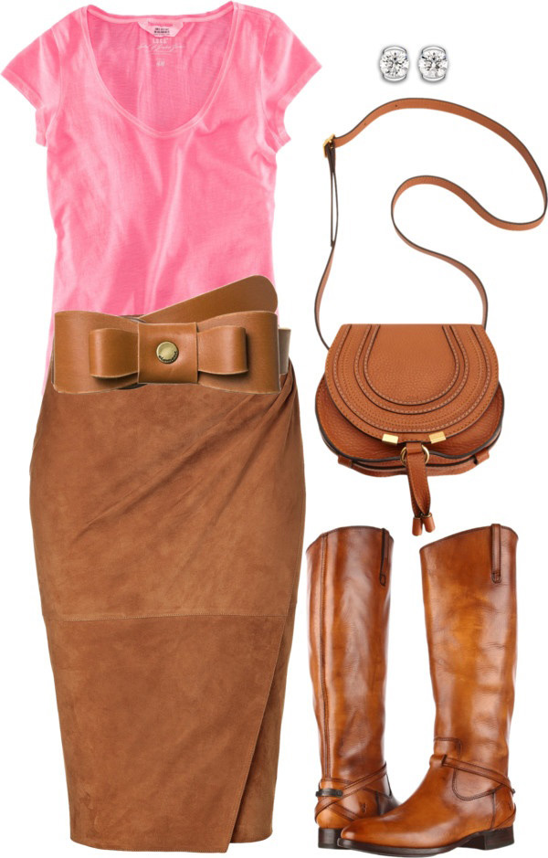
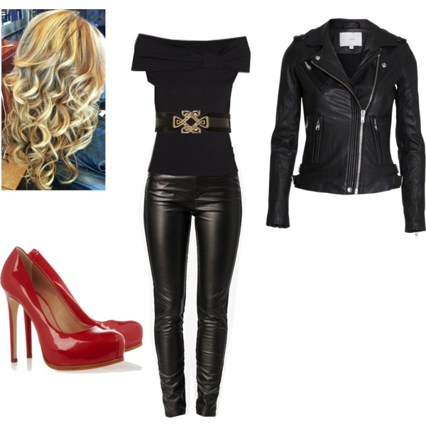
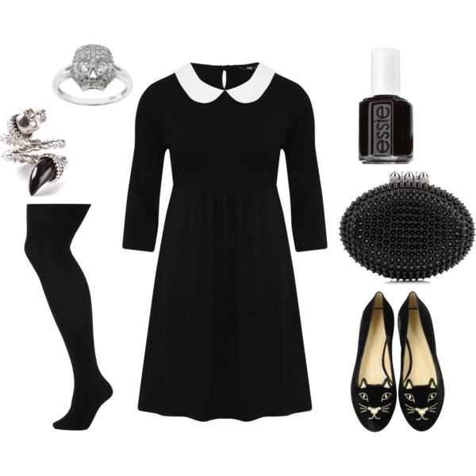

As an adult that absolutely loves Fall and everything this season entails, my child-like heart lights up with joy thinking about dressing up for Halloween. Months before I find myself getting excited thinking about the endless costume ideas and how I'm going to get everything ahead of time and really put a lot into my costume. But lets get real... life happens and I find myself less than a week before Halloween fretting about what I can possibly throw together with so little time. Since I have done this many times before I thought I would share some quick and low to no cost ideas for soome last minute Halloween costume ideas. Most of the items you can find in your closet or a local thrift store for a very reasonable price.

1. Claire Standish - "The Breakfast Club"
The Breakfast Club is one of the near and deared 80's cult classics. Whether you were the "brain, althete, basket case, princess, or criminal" there was someone who you related to in that movie. The "Princess" character played by Molly Ringwald is an easy costume to replicate.
All you need is:
- Pink shirt
- Brown skirt
- Brown boots
- Accessories

2. Sandy Olsson - "Grease"
Grease is one of the most beloved films of last 50 years. This musical set in the 50's full of milkshakes, racecars, and leather jackets is one that is almost the pure definition of a cult classic. The leading female character "Sandra Dee" played by Olivia Newton-John, is one of the most iconic characters and her style in this film is to die for. This outfit is probably the easiest to recreate.
What you will need is:
- Black shirt
- Black leggings
- Black belt
- Red heels

3. Wednesday Addams - "The Addams Family"
The Addams Family movie is another extremely popular cult film that brings the perfect inspiration for a great Halloween costume. All of the characters are well known and provide their own amount of spook to this classic movie. But there is something undeniably great about Wednesday Addams, played by a young Christina Ricci. The film has been recreated many times and you may just as easily recreate this look with some of your most basic staple pieces.
All you need is:
- White collar shirt
- Black dress
- Black tights
- Black shoes
- Accessories